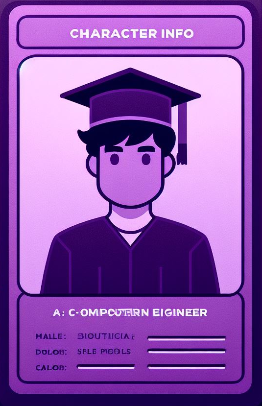

About
I graduated with a Bachelor of Science in Computer Engineering.
From analyzing circuits to diving into programming, my
journey has been a mix of hardware and software experience. I have a keen
interest in electrical systems, with a particular fondness for programming.
